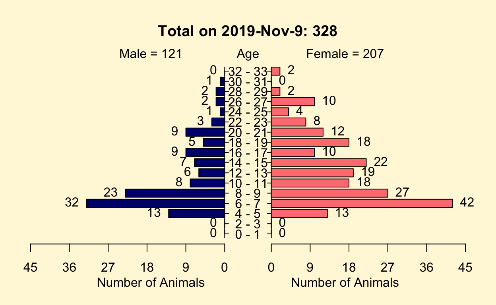
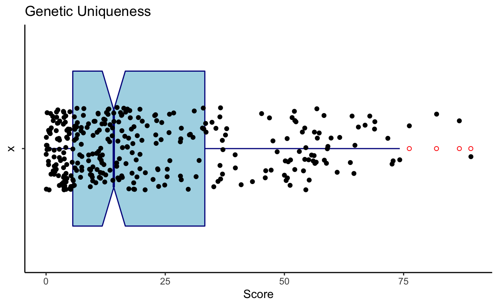

This tutorial demonstrates the major functions used within the Shiny application provided by the nprcmanager package and provides sufficient insight into those functions that they may be used independently.
This tutorial is primarily directed toward someone with experience using R who wants to better understand how the Shiny application works or to perform some actions not directly supported by the Shiny application.
Please provide any comments, questions, or bug reports through the GitHub issue tracker at .
You can install nprcmanager from GitHub with the following code.
install.packages("devtools")
devtools::install_github("rmsharp/nprcmanager")All missing dependencies should be automatically installed.
You can get help from the R console with
?nprcmanagerThe help provided by this (nprcmanager.R) needs to be more complete and include links to the tutorials.
A pedigrees can be imported using either Excel worksheets or text files that contain all of the pedigree information or using either Excel worksheets or text files that contain a list of focal animals with the remainder of the pedigree information is pulled in through the LabKey API.
This tutorial will use a pedigree file that can be created using the makeExamplePedigreeFile function as shown below. The function makeExamplePedigreeFile both saves a file and returns the full path name to the saved file, which we are saving into the variable pedigreeFile. Note: the user will select where to store the file.
library(nprcmanager)
pedigreeFile <- makeExamplePedigreeFile()This writes ExamplePedigree.csv to a place you select within your file system.
You use the file name provided by the makeExamplePedigreeFile function to tell read.table what file to read.
breederPedCsv <- read.table(pedigreeFile, sep = ",", header = TRUE,
stringsAsFactors = FALSE)Note the number of rows read. Each row represents an individual within the pedigree.
nrow(breederPedCsv)## [1] 3694The next step is to put the information read from the file into a pedigree object. This is done with the qcStudbook function, which examines the file contents and tests for common pedigree errors.
You can see the errors that can be detected by qcStudbook by returning the empty error list with getEmptyErrorLst(). We are not showing the output of the function call now because later in this tutorial we will explore errors in more depth.
qcStudbook can take four arguments sb, minParentAge (in years), reportChanges, and reportErrors. However, all but sb have default values and only the sb argument is required.
It is prudent to ensure that parents are at least of breeding age, which is species specific. I have used a minParentAge of 2 years.1
breederPed <- qcStudbook(breederPedCsv, minParentAge = 2)If qcStudbook reports an error, change the call by adding the reportErrors argument set to TRUE and examine the returned object. More on this is presented in the Pedigree Errors section.
You may want to focus your work on a focal group of animals. This can be done by reading in a list of animal IDs that make up the focal group and use that list to update the pedigree. Alternatively you can created a list of animal IDs based on criteria you have selected.
For example, to select living animals at the facility with at least one parent, the following can be used.
focalAnimals <- breederPed$id[!(is.na(breederPed$sire) &
is.na(breederPed$dam)) &
is.na(breederPed$exit)]
print(stri_c("There are ", length(focalAnimals),
" animals in the vector _focalAnimals_."))[1] “There are 327 animals in the vector focalAnimals.”
As can be seen, these animals have at least one parent and have not left the facility.
breederPed[breederPed$id %in%
focalAnimals, c("id", "sire", "dam", "exit")][1:10, ]We indicate that these are the animals of interest by using the setPopulation function. This function simply sets a column named population2 to the logical value of TRUE if the row represents an animal in the list and FALSE otherwise.
The first line of code below sets the population column and the second counts the number of rows where the value was set to TRUE.
breederPed <- setPopulation(ped = breederPed, ids = focalAnimals)
nrow(breederPed[breederPed$population, ])## [1] 327The IDs used to populate the population flag can be used to trim the pedigree so that it contains only those individuals who are in the ID list or are ancestors of those individuals.
trimmedPed <- trimPedigree(focalAnimals, breederPed)
nrow(breederPed); nrow(trimmedPed)## [1] 3694## [1] 704The trimPedigree function has the ability to remove those ancestors that do not contribute genetic information. Uninformative founders are those individuals who are parents of only one individual and who have no parental information. (Currently genotypic information is ignored by trimPedigree).
trimmedPedInformative <- trimPedigree(focalAnimals, breederPed,
removeUninformative = TRUE)
nrow(trimmedPedInformative)## [1] 509We can find all of the animals that are in the trimmed pedigree but are not focal animals.
nonfocalInTrimmedPed <- trimmedPed$id[!trimmedPed$id %in% focalAnimals]
length(nonfocalInTrimmedPed)## [1] 377We can see which of these 377 are and are not parents. We will first make sure we have all of the parents by getting our list of parents from the entire pedigree. We then demonstrate that they are all in the trimmed pedigree.
allFocalParents <- c(breederPed$sire[breederPed$id %in% focalAnimals],
breederPed$dam[breederPed$id %in% focalAnimals])
trimmedFocalParents <- c(trimmedPed$sire[trimmedPed$id %in% focalAnimals],
trimmedPed$dam[trimmedPed$id %in% focalAnimals])
all.equal(allFocalParents, trimmedFocalParents) # Are the IDs the same?## [1] TRUEHowever, not all of the animals in the trimmed pedigree are either the focal animals or their parents. They are more distant ancestors as we will show.
notFocalNotParent <- trimmedPed$id[!trimmedPed$id %in% c(focalAnimals, allFocalParents)]
length(notFocalNotParent)## [1] 187Since the trimming process is supposed to retain the focal animals and their ancestors, we will leave it as an exercise for you to demonstrate that at least some of the remaining animals are grandparents of the focal animals. Hint: there are 490 grandparents in both the trimmed and the complete pedigree.
As you can see from the number of rows in the full pedigree (3694) versus the trimmed pedigree (704), trimmed pedigrees can be much smaller. Of the additional 377 animals, 182 provide genetic information while the others (195) are genetically uninformative.
As is shown below only 4 (0ZX29Q, 1QBKW9, 5PWJ0G, and Y3CJ5A) living animals are still in the colony but are not in the trimmed pedigree.3
unknownBirth <- breederPed$id[is.na(breederPed$birth)]
knownExit <- breederPed$id[ !is.na(breederPed$exit)]
unknownBirthKnownExit <- breederPed$id[is.na(breederPed$birth) | !is.na(breederPed$exit)]
knownPed <- breederPed[!breederPed$id %in% unknownBirthKnownExit, ]
otherIds <- knownPed$id[!knownPed$id %in% trimmedPed$id[is.na(trimmedPed$exit)]]
print(stri_c("The living animal in the pedigree that are not in the trimmed ",
"pedigree are ", get_and_or_list(otherIds), "."))[1] “The living animal in the pedigree that are not in the trimmed pedigree are 0ZX29Q, 1QBKW9, 5PWJ0G, and Y3CJ5A.”
You can examine the population structure using an age-sex pyramid plot with a single function. We will limit our view to just the focal animals and their living relatives. This is appropriate for colony management because in addition to the genetic diversity we seek, we have to remain cognacent of the age and sex distributions within the colonies we manage.
getPyramidPlot(ped = trimmedPed[is.na(trimmedPed$exit), ])
Your genetic value analysis must be carefully performed. The next three commands set up the entire pedigree for analysis. The first of these three commands set all of the pedigree members to be part of the population of interest by setting the population column to TRUE for all individuals.
ped <- setPopulation(breederPed, NULL)Note that a new pedigree object (ped) is being created.
probands <- ped$id[ped$population]
ped <- trimPedigree(probands, ped, removeUninformative = FALSE,
addBackParents = FALSE)The arguments to reportGV are all optional except for ped, but you may often want to non-default values.
ped Pedigree information in data.frame format
guIter Integer indicating the number of iterations for the gene-drop analysis. Default is 5000 iterations
guThresh Integer indicating the threshold number of animals for defining a unique allele. Default considers an allele “unique” if it is found in only 1 animal.
pop Character vector with animal IDs to consider as the population of interest. The default is NULL.
byID Logical variable of length 1 that is passed through to eventually be used by alleleFreq(), which calculates the count of each allele in the provided vector. If byID is TRUE and ids are provided, the function will only count the unique alleles for an individual (homozygous alleles will be counted as 1).
geneticValue <- reportGV(ped, guIter = 500,
guThresh = 3,
byID = TRUE,
updateProgress = NULL)
summary(geneticValue)## The genetic value report
## Individuals in Pedigree: 3694
## Male Founders: 141
## Female Founders: 122
## Total Founders: 263
## Founder Equivalents: 241.84
## Founder Genome Equivalents: 163.84
## Live Offspring: 4052
## High Value Individuals: 2961
## Low Value Individuals: 733What happens if we limit our analysis to the trimmed pedigree? Remember that the trimmed pedigree still contains all of the genetic information that the full pedigree has for the focal animals.
trimmedGeneticValue <- reportGV(trimmedPed, guIter = 500,
guThresh = 3,
byID = TRUE,
updateProgress = NULL)
summary(trimmedGeneticValue)## The genetic value report
## Individuals in Pedigree: 327
## Male Founders: 3
## Female Founders: 17
## Total Founders: 20
## Founder Equivalents: 109.67
## Founder Genome Equivalents: 47.87
## Live Offspring: 321
## High Value Individuals: 228
## Low Value Individuals: 99It is clear that limiting your analysis to the animals of interest reduces the effort required to examine the animals of interest.
The names of the object within the genetic value report object (trimmedGeneticValue) can be listed as shown in the next line of code.
names(trimmedGeneticValue)## [1] "report" "kinship" "gu" "fe"
## [5] "fg" "maleFounders" "femaleFounders" "total"The report object (an R dataframe) can in-turn be examined.
names(trimmedGeneticValue$report) ## column names## [1] "id" "sex" "age"
## [4] "birth" "exit" "population"
## [7] "origin" "indivMeanKin" "zScores"
## [10] "gu" "totalOffspring" "livingOffspring"
## [13] "value" "rank"nrow(trimmedGeneticValue$report) ## Number of rows## [1] 327The report is more conveniently used as a separate object. The next section of code rounds some of the numerica values and converts all columns to characters for display as a table where only the first 10 lines are included.
rpt <- trimmedGeneticValue[["report"]]
rpt$indivMeanKin <- round(rpt$indivMeanKin, 5)
rpt$zScores <- round(rpt$zScores, 2)
rpt$gu <- round(rpt$gu, 5)
rpt <- toCharacter(rpt)
names(rpt) <- headerDisplayNames(names(rpt))
knitr::kable(rpt[1:10, ]) # needs more work for display purposes.| Ego ID | Sex | Age (in years) | Birth Date | Exit Date | Breeding Colony Member | Origin | Individual Mean Kinship | Z-score (Mean Kinship) | Genome Uniqueness (%) | Total Offspring | Living Offspring | Value Designation | Rank |
|---|---|---|---|---|---|---|---|---|---|---|---|---|---|
| KZM9RB | M | 30.1 | 1989-05-03 | NA | TRUE | 0.00329 | -1.90 | 89.1 | 0 | 0 | High Value | 1 | |
| CLSVU6 | F | 23.9 | 1995-08-02 | NA | TRUE | 0.00287 | -1.97 | 86.7 | 1 | 1 | High Value | 2 | |
| 1SPLS8 | F | 7.9 | 2011-07-26 | NA | TRUE | 0.00373 | -1.83 | 81.9 | 0 | 0 | High Value | 3 | |
| WK89I9 | F | 21.1 | 1998-05-26 | NA | TRUE | 0.00582 | -1.49 | 76.2 | 0 | 0 | High Value | 4 | |
| 3MMZD4 | M | 12.2 | 2007-03-24 | NA | TRUE | 0.00536 | -1.57 | 74.2 | 0 | 0 | High Value | 5 | |
| 01QRQ4 | F | 18.2 | 2001-04-04 | NA | TRUE | 0.00373 | -1.83 | 72.8 | 0 | 0 | High Value | 6 | |
| IZDV8K | M | 7.7 | 2011-09-29 | NA | TRUE | 0.00480 | -1.66 | 72.6 | 0 | 0 | High Value | 7 | |
| 8YP6PA | M | 5.0 | 2014-07-04 | NA | TRUE | 0.00485 | -1.65 | 71.7 | 0 | 0 | High Value | 8 | |
| CHK1ZX | F | 7.8 | 2011-09-06 | NA | TRUE | 0.00481 | -1.66 | 69.0 | 0 | 0 | High Value | 9 | |
| A6A1M1 | M | 20.0 | 1999-06-08 | NA | TRUE | 0.00577 | -1.50 | 68.9 | 2 | 1 | High Value | 10 |
We start the next lines of code by getting a fresh copy of the genetic value report since we changed all of the numeric values to characters in the last section to print the table. These lines demonstrate one way of extracting the component objects from the genetic value object.
rpt <- trimmedGeneticValue[["report"]]
kmat <- trimmedGeneticValue[["kinship"]]
f <- trimmedGeneticValue[["total"]]
mf <- trimmedGeneticValue[["maleFounders"]]
ff <- trimmedGeneticValue[["femaleFounders"]]
fe <- trimmedGeneticValue[["fe"]]
fg <- trimmedGeneticValue[["fg"]]It is informative to examine the distribution of genetic uniqueness, mean kinship, and z-scores (normalized mean kinship values).
Creation of the boxplot for the genetic uniqueness values is shown below.
gu <- rpt[, "gu"]
guBox <- ggplot(data.frame(gu = gu), aes(x = "", y = gu)) +
geom_boxplot(
color = "darkblue",
fill = "lightblue",
notch = TRUE,
outlier.color = "red",
outlier.shape = 1
) +
theme_classic() + geom_jitter(width = 0.2) + coord_flip() +
ylab("Score") + ggtitle("Genetic Uniqueness")
print(guBox)
Extraction of the individual mean kinship values and their corresponding z-scores is shown in the next code chunk.
mk <- rpt[, "indivMeanKin"]
zs <- rpt[, "zScores"]Creation of boxplots for the mean kinship and z-scores is left as an exercise.
The primary purpose of nprcmanager is to form breeding groups according to our best information regarding maintaining the genetic characteristics we desire and the realities associated with other animal husbandry needs.
There are several options you must consider when forming groups using nprcmanager, which we will examine using code below.
You decisions regarding each of the above options are expressed in a call to the function groupAddAssign. A complete description of the function and its arguments is available using the code shown below.
?groupAddAssignBelow is the descriptions of the function parameters extracted from the documentation near the time this tutorial was prepared.
candidates Character vector of IDs of the animals available for use in forming the groups. The animals that may be present in currentGroups are not included within candidates.
currentGroups List of character vectors of IDs of animals currently assigned to groups. Defaults to a list with character(0) in each sublist element (one for each group being formed) assuming no groups are prepopulated.
kmat Numeric matrix of pairwise kinship values. Rows and columns are named with animal IDs.
ped Dataframe that is the ‘Pedigree’. It contains pedigree information including the IDs listed in candidates.
threshold Numeric value indicating the minimum kinship level to be considered in group formation. Pairwise kinship below this level will be ignored. The default values is 0.015625.
ignore List of character vectors representing the sex combinations to be ignored. If provided, the vectors in the list specify if pairwise kinship should be ignored between certain sexes. Default is to ignore all pairwise kinship between females.
minAge Integer value indicating the minimum age to consider in group formation. Pairwise kinships involving an animal of this age or younger will be ignored. Default is 1 year.
iter Integer indicating the number of times to perform the random group formation process. Default value is 1000 iterations.
numGp Integer value indicating the number of groups that should be formed from the list of IDs. Default is 1.
updateProgress Function or NULL. If this function is defined, it will be called during each iteration to update a shiny::Progress object.
harem Logical variable when set to TRUE, the formed groups have a single male at least minAge old.
sexRatio Numeric value indicating the ratio of females to males x from 0.5 to 20 by increments of 0.5.
withKin Logical variable when set to TRUE, the kinship matrix for the group is returned along with the group and score. Defaults to not return the kinship matrix. This maintains compatability with earlier versions.
We will use the trimmedPed pedigree in our code.
For illustration purposes we are going to keep the numbers of candidates, groups, and iterations fairly small.
We will get first some animal IDs to use for our candidates by selecting animals at least 2 years old at the time this pedigree was sampled (01-01-2015).
candidates <- trimmedPed$id[
trimmedPed$birth < as.Date("2013-01-01") & !is.na(trimmedPed$birth) &
is.na(trimmedPed$exit)]
table(trimmedPed$sex[trimmedPed$id %in% candidates])##
## F M H U
## 184 96 0 0Our candidates are made up of 184 females and 96 males. The parameters currentGroups, threshold, ignore, minAge, sexRatio, withKin, and updateProgress are allowed to take their default values. The setting of the sexRatio parameter to 0 is ignored in the following call of the groupAddAssign function. This is consistent with the a value of 0 making little since in a breeding colony.
The empty seventh group at the bottom is evidence that all of the canditate animals could be placed in a group without exceeding the default value of 0.015625.
The following group assignments will be forming harem groups. This is done by setting harem to
haremGrp <- groupAddAssign(candidates = candidates,
kmat = trimmedGeneticValue[["kinship"]],
ped = trimmedPed,
iter = 100,
numGp = 6,
harem = TRUE)
haremGrp$group## [[1]]
## [1] "CHSCFG" "B1WVCN" "72LYDE" "13B1QL" "WI38KZ" "AIHJ8Z" "EMV4P6"
## [8] "I5CI33" "FB5L3N" "30J3CQ" "TEACA3" "7B9CA6" "0IIAEN" "BCJJKN"
## [15] "0X4W26" "JLFKV8" "DKIM6U" "GTLA8R" "SH3FB7" "1CZM30" "Q7U139"
## [22] "DCJJYS" "0SGJ12" "G25E3F" "QW2Z3R" "SHG3RB" "3SKITJ" "W0GUKI"
## [29] "T3QPW5" "6F9FB8"
##
## [[2]]
## [1] "3QHAFI" "1GF3GM" "87AQLF" "N5QBWD" "9P0DES" "3YJIMV" "WJXIH9"
## [8] "W6MDVK" "83HQBN" "S7IWWA" "S222R3" "Q17CG3" "RJ4JPC" "HE0SCR"
## [15] "W5WIRP" "5EDLL7" "QQMBT1" "1SPLS8" "E5Q33K" "QRZK48" "PU7RSG"
## [22] "GIIEUD" "LVYYNY" "38K2SR" "MX4J7G" "6KWVRI" "WKY2SZ" "K3TNHP"
## [29] "ZPS15A"
##
## [[3]]
## [1] "8TV4MT" "CHK1ZX" "N79QXB" "0XTZQ1" "50D77I" "5W621W" "YLRNIK"
## [8] "1SSCJC" "5BPBUI" "MYUMMX" "KX0RJ3" "7ZNY75" "S056D5" "D9P18Y"
## [15] "NK802Y" "AW400C" "XEC0M5" "TXZUKC" "N4NV8B" "C18V6I" "R5AYJK"
## [22] "M9PVG5" "AR5U44" "WTE53B" "B134XZ" "CLSVU6" "AP1YLW" "ZH3YG1"
## [29] "X694YR" "VWC5ZH" "F7I2ED" "3GECJJ" "B228Q6"
##
## [[4]]
## [1] "YDRD81" "MKY9TK" "01QRQ4" "LYSLPP" "QWKFBH" "Y6DB6L" "G58RGY"
## [8] "7NE2UT" "CRPXY7" "DRXMW4" "MTCAIG" "Z904TJ" "5IAFMK" "DPXEQE"
## [15] "MH88T6" "EZ2F8A" "967Y3D" "AR17R5" "DH9WJQ" "BS3RLE" "99BMJW"
## [22] "CMMUKU" "D4B0RM" "DHNQ1W" "XFWVVX" "YTJ2UL" "321LLB" "PYPM1W"
## [29] "2F6J3U" "Y0TCYX" "ILVQVB" "MB6NYQ" "FL170P" "FG0SFA" "KZY6PD"
##
## [[5]]
## [1] "IZDV8K" "1VP3UC" "6X6BG9" "D33J06" "IH1KPA" "WK89I9" "PBAFJF"
## [8] "PI4VHT" "QCENKM" "TQEMY6" "1FAZ0K" "J3F6PD" "1QVS67" "NN3GDQ"
## [15] "1KJ2MG" "8JUUJ9" "DI4AHD" "KEA4QG" "1CIRC9" "MFKT9C" "AZ3L0D"
## [22] "LS184H" "PJ72W1" "92UG4N" "SCFSBF" "I8ABC7" "GCBYDW" "Q8U9LB"
## [29] "XYRDKV"
##
## [[6]]
## [1] "A98D7P" "7RA57Q" "EX5K0S" "YFCIHJ" "WLMGS1" "2Z4YLY" "465ERA"
## [8] "5KWNMZ" "H2J6UA" "S5H1GC" "F45799" "0HYZ23" "AFZKBS" "S3EBGZ"
## [15] "5ERY5Z" "MPIQ4N" "GAS52W" "QCA36T" "9MG040" "ZQXZYB" "WNEAS6"
## [22] "ZATMEE" "TYEWF1" "46ZHKN" "BKWE4D" "FJS7RQ" "ESUIAF" "CS23RV"
## [29] "5EDIEE" "3DTD2N" "RVHVTZ" "414N7M" "PVY432" "G8MCV7"
##
## [[7]]
## [1] NAWe can identify and list the males in each group with the following code.
sapply(haremGrp$group, function(ids) {ids[ids %in% trimmedPed$id[trimmedPed$sex == "M"]]})## [[1]]
## [1] "CHSCFG"
##
## [[2]]
## [1] "3QHAFI"
##
## [[3]]
## [1] "8TV4MT"
##
## [[4]]
## [1] "YDRD81"
##
## [[5]]
## [1] "IZDV8K"
##
## [[6]]
## [1] "A98D7P"
##
## [[7]]
## logical(0)It is easy to notice that the male is listed first within each breeding group.
We can also see the number of animals and the sex ratios created in each group. Since these are harem groups the sex ratios are determined by the number of animals in the individual groups.
lines <- sapply(haremGrp$group, function(ids) {
paste0("Count: ", length(ids), " Sex Ratio: ",
round(calculateSexRatio(ids, trimmedPed), 2))})
for (line in lines) print(line)## [1] "Count: 30 Sex Ratio: 29"
## [1] "Count: 29 Sex Ratio: 28"
## [1] "Count: 33 Sex Ratio: 32"
## [1] "Count: 35 Sex Ratio: 34"
## [1] "Count: 29 Sex Ratio: 28"
## [1] "Count: 34 Sex Ratio: 33"
## [1] "Count: 1 Sex Ratio: Inf"Examination of this table shows that of the 184 females 155 are included.
The following group assignments will be forming harem groups. This is done by setting harem to .
sexRatioGrp <- groupAddAssign(candidates = candidates,
kmat = trimmedGeneticValue[["kinship"]],
ped = trimmedPed,
iter = 1000,
numGp = 6,
sexRatio = 9)
sexRatioGrp$group## [[1]]
## [1] "1CIRC9" "ZDRSG0" "5EDLL7" "MYUMMX" "WKY2SZ" "AP1YLW" "CLSVU6"
## [8] "MH88T6" "R5AYJK" "3SKITJ" "9P0DES" "AR5U44" "1KJ2MG" "0V4SAC"
## [15] "1SSCJC" "PJ72W1" "B134XZ" "D33J06" "Q17CG3" "DI4AHD" "S056D5"
## [22] "LS184H" "99BMJW" "LVYYNY" "GM371F" "K3TNHP" "WJXIH9" "S5H1GC"
## [29] "N79QXB" "1QVS67" "1VP3UC" "5KWNMZ" "38K2SR" "83HQBN" "IZDV8K"
##
## [[2]]
## [1] "WLMGS1" "DGZLV3" "F45799" "AFZKBS" "PI4VHT" "Y0TCYX" "WNEAS6"
## [8] "GIIEUD" "FL170P" "5BPBUI" "CMMUKU" "92UG4N" "TQEMY6" "G2GYST"
## [15] "0XTZQ1" "GTLA8R" "XFWVVX" "N5QBWD" "TEACA3" "G8MCV7" "B228Q6"
## [22] "ZPS15A" "G25E3F" "PVY432" "KZM9RB" "I5CI33" "DKIM6U" "T3QPW5"
## [29] "1CZM30" "30J3CQ" "MKY9TK" "1FAZ0K" "MTCAIG"
##
## [[3]]
## [1] "B1WVCN" "XY2CK7" "BKWE4D" "KX0RJ3" "DHNQ1W" "01QRQ4" "QWKFBH"
## [8] "2F6J3U" "46ZHKN" "5IAFMK" "BCJJKN" "ESUIAF" "CS23RV" "S63QDN"
## [15] "FG0SFA" "WTE53B" "AW400C" "IH1KPA" "0SGJ12" "C18V6I" "DH9WJQ"
## [22] "XYRDKV" "EZ2F8A" "WK89I9" "5KFB90" "G58RGY" "YFCIHJ" "YTJ2UL"
## [29] "465ERA" "DPXEQE" "MFKT9C" "PU7RSG" "KZY6PD" "GCBYDW" "Z25D52"
##
## [[4]]
## [1] "QRZK48" "SXSVEH" "FB5L3N" "9MG040" "NK802Y" "3YJIMV" "W5WIRP"
## [8] "1SPLS8" "7B9CA6" "0HYZ23" "50D77I" "MB6NYQ" "ZQXZYB" "FFGPS4"
## [15] "13B1QL" "414N7M" "N4NV8B" "EX5K0S" "ILVQVB" "8JUUJ9" "TXZUKC"
## [22] "M9PVG5" "2Z4YLY" "6X6BG9" "3MMZD4" "W6MDVK" "Y6DB6L" "MPIQ4N"
## [29] "HE0SCR"
##
## [[5]]
## [1] "ZATMEE" "CHJ9D2" "87AQLF" "6F9FB8" "7RA57Q" "7NE2UT" "0IIAEN"
## [8] "5ERY5Z" "NN3GDQ" "DCJJYS" "SHG3RB" "0X4W26" "967Y3D" "CFD12A"
## [15] "ZH3YG1" "F7I2ED" "RVHVTZ" "GAS52W" "SH3FB7" "CRPXY7" "AIHJ8Z"
## [22] "6KWVRI" "I8ABC7" "TYEWF1" "K7900I" "1GF3GM" "AR17R5" "EMV4P6"
## [29] "SCFSBF" "J3F6PD" "RJ4JPC" "S222R3"
##
## [[6]]
## [1] "Z904TJ" "YDRD81" "D9P18Y" "MX4J7G" "3GECJJ" "QCENKM" "AZ3L0D"
## [8] "D4B0RM" "5W621W" "YLRNIK" "X694YR" "Q7U139" "KEA4QG" "AEP5EG"
## [15] "JLFKV8" "W0GUKI" "5EDIEE" "CHK1ZX" "Q8U9LB" "PBAFJF" "QQMBT1"
## [22] "321LLB" "WI38KZ" "VWC5ZH" "JSAP3H" "DRXMW4" "H2J6UA" "FJS7RQ"
## [29] "LYSLPP" "XEC0M5" "S3EBGZ" "S7IWWA" "E5Q33K" "BS3RLE"
##
## [[7]]
## [1] "HLQ9SY" "B2CKHA" "GDXWJ1" "TR5L57" "XC304E" "Z7NBA2" "1E8KD1"
## [8] "5PW7WT" "A6A1M1" "BW10CL" "FTVE03" "IRFJ09" "KXHGRH" "LMJWTN"
## [15] "Q9LWGX" "R6HV9A" "RNQU14" "09LFE4" "3DTD2N" "3QHAFI" "55BPSE"
## [22] "5XVTVH" "72LYDE" "8IG767" "9FRCIE" "ER464J" "FG6L7S" "NHWTJ9"
## [29] "P7RBPI" "TBCE78" "YI16QD" "2F1IV1" "4LHK19" "59NYZE" "5IYDXN"
## [36] "6KLWVC" "80F2MI" "8TV4MT" "A98D7P" "AZ4D19" "BTTHAJ" "CHSCFG"
## [43] "EEGLWY" "FX9E4X" "G91ZM6" "J1R2EW" "LDND6J" "LN1DLY" "MQT080"
## [50] "NSIC4I" "PHB6TE" "PYPM1W" "QRWYQZ" "QW2Z3R" "RY1AZM" "WHQLH5"
## [57] "WQUN84" "XL658N" "XX0GYV" "YHHVC7" "YP910X" "0X1RZ9" "3YHBC1"
## [64] "55VDSQ" "653J82" "6MEP2C" "76DIT4" "7ZNY75" "80KACX" "B2YJJP"
## [71] "E3JP0C" "FLIZQI" "MEUZ85" "PA9F3J" "QCA36T" "T38W6H" "TJN1AD"
## [78] "WNKKW3" "XZH41H" "3P9BX6" "7D09WH" "ZW2X4N"Again we can identify and list the males in each group with the following code.
sapply(sexRatioGrp$group, function(ids) {ids[ids %in% trimmedPed$id[trimmedPed$sex == "M"]]})## [[1]]
## [1] "ZDRSG0" "0V4SAC" "GM371F" "IZDV8K"
##
## [[2]]
## [1] "DGZLV3" "G2GYST" "KZM9RB"
##
## [[3]]
## [1] "XY2CK7" "S63QDN" "5KFB90" "Z25D52"
##
## [[4]]
## [1] "SXSVEH" "FFGPS4" "3MMZD4"
##
## [[5]]
## [1] "CHJ9D2" "CFD12A" "K7900I"
##
## [[6]]
## [1] "YDRD81" "AEP5EG" "JSAP3H"
##
## [[7]]
## [1] "HLQ9SY" "B2CKHA" "GDXWJ1" "TR5L57" "XC304E" "Z7NBA2" "1E8KD1"
## [8] "5PW7WT" "A6A1M1" "BW10CL" "FTVE03" "IRFJ09" "KXHGRH" "LMJWTN"
## [15] "Q9LWGX" "R6HV9A" "RNQU14" "09LFE4" "3QHAFI" "55BPSE" "5XVTVH"
## [22] "8IG767" "9FRCIE" "ER464J" "FG6L7S" "NHWTJ9" "P7RBPI" "TBCE78"
## [29] "YI16QD" "2F1IV1" "4LHK19" "59NYZE" "5IYDXN" "6KLWVC" "80F2MI"
## [36] "8TV4MT" "A98D7P" "AZ4D19" "BTTHAJ" "CHSCFG" "EEGLWY" "FX9E4X"
## [43] "G91ZM6" "J1R2EW" "LDND6J" "LN1DLY" "MQT080" "NSIC4I" "PHB6TE"
## [50] "QRWYQZ" "RY1AZM" "WHQLH5" "WQUN84" "XL658N" "XX0GYV" "YHHVC7"
## [57] "YP910X" "0X1RZ9" "3YHBC1" "55VDSQ" "653J82" "6MEP2C" "76DIT4"
## [64] "80KACX" "B2YJJP" "E3JP0C" "FLIZQI" "MEUZ85" "PA9F3J" "T38W6H"
## [71] "TJN1AD" "WNKKW3" "XZH41H" "3P9BX6" "7D09WH" "ZW2X4N"We can also see the number of animals and the sex ratios created in each group.
lines <- sapply(sexRatioGrp$group, function(ids) {
paste0("Count: ", length(ids), " Sex Ratio: ",
round(calculateSexRatio(ids, trimmedPed), 2))})
for (line in lines) print(line)## [1] "Count: 35 Sex Ratio: 7.75"
## [1] "Count: 33 Sex Ratio: 10"
## [1] "Count: 35 Sex Ratio: 7.75"
## [1] "Count: 29 Sex Ratio: 8.67"
## [1] "Count: 32 Sex Ratio: 9.67"
## [1] "Count: 34 Sex Ratio: 10.33"
## [1] "Count: 82 Sex Ratio: 0.08"Examination of this table shows that of the 184 females 239 are included.
As stated earlier you can see which types of errors are detected by qcStudbook by looking at names returned by getEmptyErrorLst() as shown below.
names(getEmptyErrorLst())## [1] "failedDatabaseConnection" "missingColumns"
## [3] "invalidDateRows" "suspiciousParents"
## [5] "femaleSires" "maleDams"
## [7] "sireAndDam" "duplicateIds"
## [9] "changedCols"Each is defined below.
| Error | Definition |
|---|---|
| failedDatabaseConnection | Database connection failed: configuration or permissions are invalid |
| missingColumns | Columns that must be within the pedigree file are missing. |
| invalidDateRows | Values, which are supposed to be dates, cannot be interpreted as a date. |
| suspiciousParents | Parents were too young on the date of birth of to have been the parent. |
| femaleSires | Individuals listed as female or hemaphroditic and as a sire. |
| maleDams | Individuals are listed as male and as a dam. |
| sireAndDam | Individuals who are listed as both a sire and a dam. |
| duplicateIds | IDs listed more than once. |
| changedCols | Columns that have been changed to conform to internal naming conventions and what they were changed to. |
We are going to use the small imaginary pedigree listed below that has multiple errors to discuss pedigree error detection and reporting. First note the birthdates of ego_id o4 (2006-04-13) and the purported sire s2 (2006-06-19). Note also the proported birthdate of the d2 and the birthdates of her offspring. Obviously dates or IDs may be incorrect.
This is the pedigree. (We will discuss the column names shortly.)
knitr::kable(nprcmanager::pedOne)| ego_id | si re | dam_id | sex | birth_date |
|---|---|---|---|---|
| s1 | NA | NA | F | 2000-07-18 |
| d1 | NA | NA | M | 2003-04-13 |
| s2 | NA | NA | M | 2006-06-19 |
| d2 | NA | NA | F | 2015-09-16 |
| o1 | s1 | d1 | F | 2015-02-04 |
| o2 | s1 | d2 | F | 2009-03-17 |
| o3 | s2 | d2 | F | 2012-04-11 |
| o4 | s2 | d2 | M | 2006-04-13 |
If we try to convert this pedigree file into the standardized studbook format, we are going to get an error message and the creation of a file in the user’s home directory that lists the records that have generated the errors.
pedOne <- nprcmanager::pedOne # put it in the local environment
ped <- qcStudbook(pedOne, minParentAge = 0)## Error in qcStudbook(pedOne, minParentAge = 0): Parents with low age at birth of offspring are listed in ~/lowParentAge.csv.The contents of lowParentAge.csv is shown below.
| dam | sire | id | sex | birth | recordStatus | exit | sireBirth | damBirth | sireAge | damAge |
|---|---|---|---|---|---|---|---|---|---|---|
| d2 | s1 | o2 | F | 2009-03-17 | original | NA | 2000-07-18 | 2015-09-16 | 8.67 | -6.50 |
| d2 | s2 | o3 | F | 2012-04-11 | original | NA | 2006-06-19 | 2015-09-16 | 5.82 | -3.43 |
| d2 | s2 | o4 | M | 2006-04-13 | original | NA | 2006-06-19 | 2015-09-16 | -0.18 | -9.43 |
Examination of the ages of the parents reveals the issues being reported.
We can remove the errors by changing the birthdates of o4 from 2006-04-13 to 2015-09-16 and of d2 from 2015-09-16 to 2006-04-13.
pedOne$birth_date[pedOne$ego_id == "o4"] <- as.Date("2015-09-16")
pedOne$birth_date[pedOne$ego_id == "d2"] <- as.Date("2006-04-13")Note the changes made to the column names between the original pedOne pedigree and the pedigree (ped) we get from qcStudbook. We have chosen to limit the displayed pedigree by selecting the ego_id’s and id’s in pedOne and ped respectively.
ped <- qcStudbook(pedOne, minParentAge = 0)
ped[ped$id %in% c("s2", "d2", "o3", "o4"), ]However, the preferred method of creating the standardized studbook format with qcStudbook is to examine all errors found and correcting them before proceeding. This is done by explicitely requesting that all aspects inconsistent with the studbook format be identified by setting reportChanges and reportErrors to .
errorList <- qcStudbook(pedOne, minParentAge = 0, reportChanges = TRUE,
reportErrors = TRUE)
summary(errorList)## Error: The animal listed as a sire and also listed as a female is: s1.
## Error: The animal listed as a dam and also listed as a male is: d1.
## Change: The column where space was removed is: si re to sire.
## Change: The columns where underscore was removed are: ego_id, dam_id, and birth_date to egoid, damid, and birthdate.
## Change: The column changed from: egoid to id.
## Change: The column changed from: damid to dam.
## Change: The column changed from: birthdate to birth.
##
## Please check and correct the pedigree file.
## We will discuss each of these newly identified errors in a moment, however, let’s look at shortening this report, because often you will not be interested in the more trivial changes to the column names made by qcStudbook and in those cases you simply choose not to report changes to the column names as is shown here by setting reportChanges to . For this illustration, we are going to bring back the original copy of pedOne to see how the suspicious parents are reported by the summmary function.
pedOne <- nprcmanager::pedOne
errorList <- qcStudbook(pedOne, minParentAge = 0, reportChanges = FALSE,
reportErrors = TRUE)
options(width = 90)
summary(errorList)## Error: The animal listed as a sire and also listed as a female is: s1.
## Error: The animal listed as a dam and also listed as a male is: d1.
##
## Please check and correct the pedigree file.
##
## Animal records where parent records are suspicous because of dates.
## One or more parents appear too young at time of birth.
## dam sire id sex birth recordStatus exit sireBirth damBirth sireAge damAge
## 2 d2 s1 o2 F 2009-03-17 original <NA> 2000-07-18 2015-09-16 8.67 -6.5
## 3 d2 s2 o3 F 2012-04-11 original <NA> 2006-06-19 2015-09-16 5.82 -3.4
## 4 d2 s2 o4 M 2006-04-13 original <NA> 2006-06-19 2015-09-16 -0.18 -9.4The first two errors mentioned are of particular interest. Currently qcStudbook automatically changes the sex of dams to F (female) and sires to M (male) when reportErrors is set to .
This feature is not supported within the Shiny application and is not fully implemented.
To use the findLoops function run the following code and select a pedigree as your input file that has a loop in it. We are continuing to use the example pedigree that comes with the software Example_Pedigree.csv.
exampleTree <- createPedTree(breederPed)
exampleLoops <- findLoops(exampleTree)You can count how many loops you have with the following code.
length(exampleLoops[exampleLoops == TRUE])## [1] 145nLoops <- countLoops(exampleLoops, exampleTree)
sum(unlist(nLoops[nLoops > 0]))## [1] 258You can list the first 10 sets of ids, sires and dams in loops with the following line of code:
examplePedigree[exampleLoops == TRUE, c("id", "sire", "dam")][1:10, ]elapsed_time <- get_elapsed_time_str(start_time)The current date and time is 2019-11-09 21:23:21. The processing time for this document was 2 minutes and 24 seconds..
sessionInfo()## R version 3.6.1 (2019-07-05)
## Platform: x86_64-apple-darwin15.6.0 (64-bit)
## Running under: macOS Catalina 10.15
##
## Matrix products: default
## BLAS: /Library/Frameworks/R.framework/Versions/3.6/Resources/lib/libRblas.0.dylib
## LAPACK: /Library/Frameworks/R.framework/Versions/3.6/Resources/lib/libRlapack.dylib
##
## locale:
## [1] en_US.UTF-8/en_US.UTF-8/en_US.UTF-8/C/en_US.UTF-8/en_US.UTF-8
##
## attached base packages:
## [1] stats graphics grDevices utils datasets methods base
##
## other attached packages:
## [1] testthat_2.2.1 futile.logger_1.4.3 DT_0.9 shinyBS_0.61
## [5] png_0.1-7 knitr_1.25 ggplot2_3.2.1 nprcmanager_0.5.36
## [9] stringi_1.4.3 learnr_0.10.0 shiny_1.4.0
##
## loaded via a namespace (and not attached):
## [1] Rcpp_1.0.2 lubridate_1.7.4 lattice_0.20-38 gtools_3.8.1
## [5] assertthat_0.2.1 rprojroot_1.3-2 digest_0.6.21 mime_0.7
## [9] R6_2.4.0 cellranger_1.1.0 futile.options_1.0.1 backports_1.1.5
## [13] WriteXLS_5.0.0 evaluate_0.14 highr_0.8 httr_1.4.1
## [17] pillar_1.4.2 gplots_3.0.1.1 rlang_0.4.0 lazyeval_0.2.2
## [21] readxl_1.3.1 rstudioapi_0.10 gdata_2.18.0 Matrix_1.2-17
## [25] checkmate_1.9.4 rmarkdown_1.16 labeling_0.3 stringr_1.4.0
## [29] htmlwidgets_1.5.1 munsell_0.5.0 anytime_0.3.6 compiler_3.6.1
## [33] httpuv_1.5.2 xfun_0.10 pkgconfig_2.0.3 htmltools_0.4.0
## [37] tidyselect_0.2.5 tibble_2.1.3 htmlTable_1.13.2 codetools_0.2-16
## [41] crayon_1.3.4 dplyr_0.8.3 withr_2.1.2 later_1.0.0
## [45] bitops_1.0-6 grid_3.6.1 jsonlite_1.6 xtable_1.8-4
## [49] gtable_0.3.0 magrittr_1.5 formatR_1.7 scales_1.0.0
## [53] KernSmooth_2.23-16 promises_1.1.0 lambda.r_1.2.4 RColorBrewer_1.1-2
## [57] tools_3.6.1 glue_1.3.1 Rlabkey_2.3.2 purrr_0.3.3
## [61] markdown_1.1 plotrix_3.7-6 fastmap_1.0.1 yaml_2.2.0
## [65] colorspace_1.4-1 caTools_1.17.1.2Setting the minParentAge to 3.5 and above will cause an error along with the creation of a file ~/lowParentAge.csv that will list the parents with low age at the birth of an offspring.↩
The population column is created and added to the pedigree object if it does not already exist.↩
All animals within the colony have a known birth date.↩